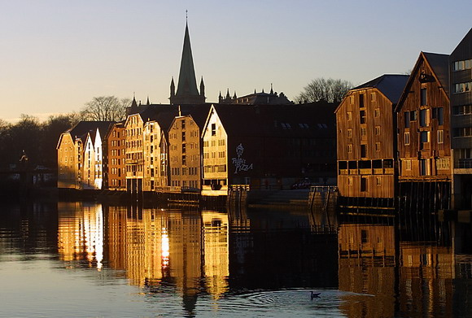

Город Тронхейм стоит на берегу Тронхеймского фьорда и является одним из самых интересных городов Норвегии. Город был основан в 997 году Улавом Трюгвассоном и назывался Нидарос, что означает «в устье реки Нид». К концу XI века заложили каменную церковь ( Нидаросский Собор), а в 1152 году было учреждено Нидаросское епископство, что также способствовало активному росту города. В 1681 году пожар уничтожил большую часть города, и датско-норвежский король Кристиан Пятый повелел составить новый городской план и все полностью перестроить. Городская крепость Кристиансен в связи с тысячелетним юбилеем Тронхейма в 1997 году была тщательно отреставрирована. Сейчас на территории крепости проходит множество экскурсий и до костюмированных представлений. Эта крепость играет роль символа и была одной из самых надежных крепостей Скандинавии.